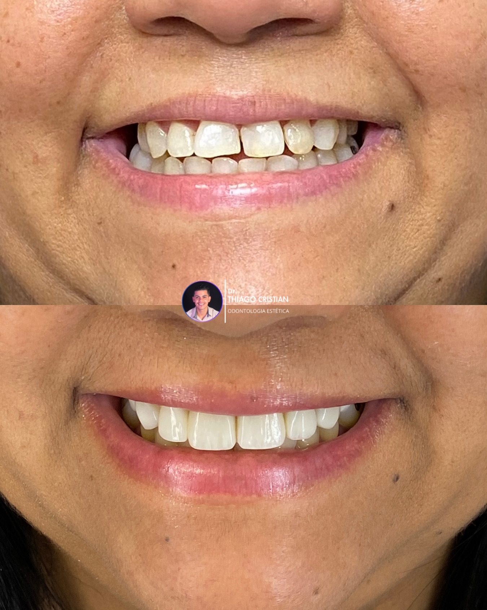
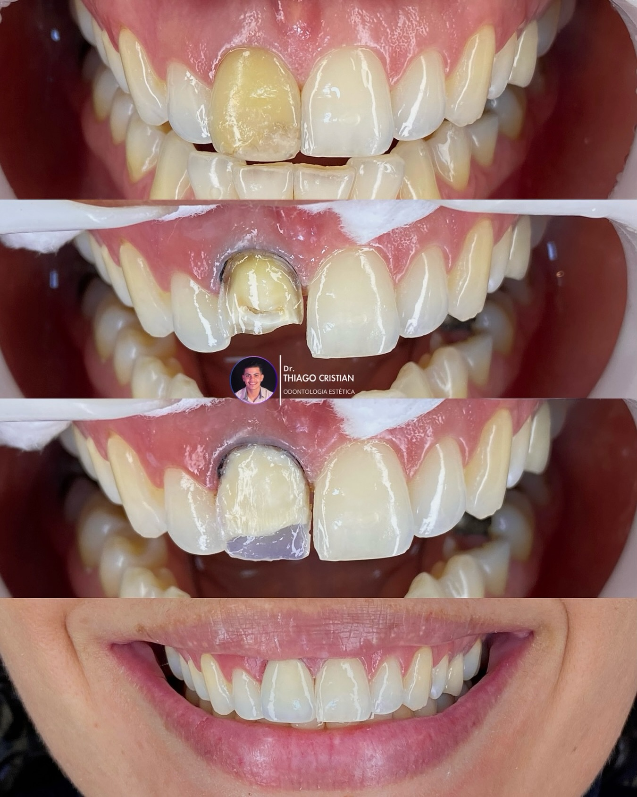
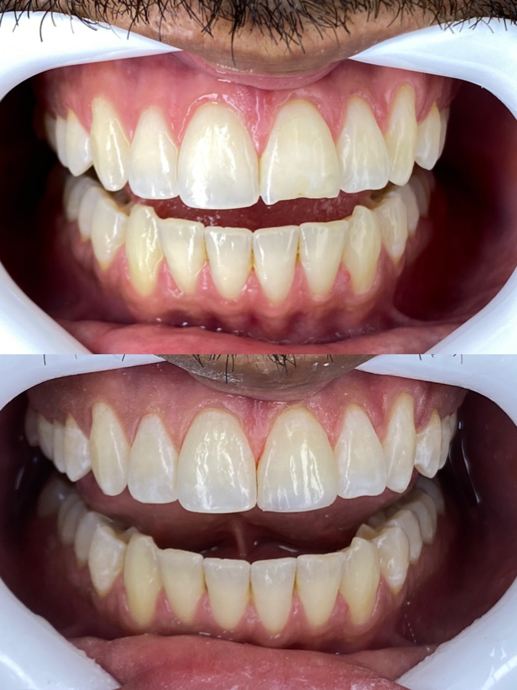
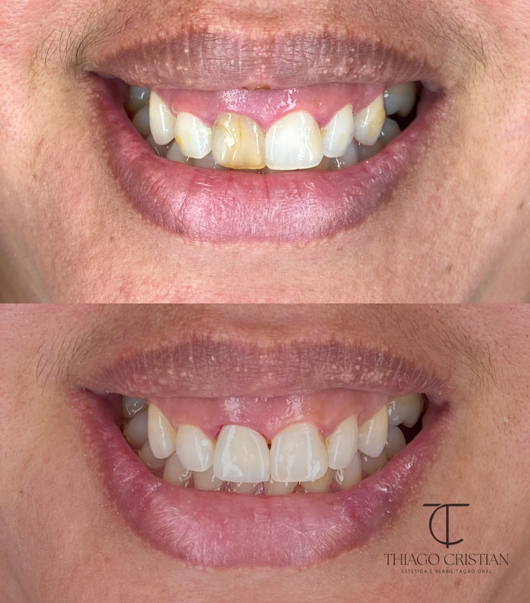

Clínica geral
A base de tudo. Limpeza com ultrassom, restaurações em resina, extrações simples, tratamento de cárie e cuidado com gengiva. É aqui que a gente evita que um problema pequeno vire canal ou extração.
Cirurgião-dentista — Vitória de S. Antão, PE
Me chamo Thiago Cristian. Trabalho com clínica geral, estética e implantes — com planejamento honesto, sem pressa e sem empurrar tratamento. Você sai da primeira consulta entendendo exatamente o que precisa (e o que não precisa).
Acompanhado por +2.200 pessoas no Instagram
@dr.thiagocristian • 141 publicações sobre rotina real de consultório
Sobre
Não acredito em consulta de 10 minutos. Gosto de olhar, escutar e explicar — principalmente pra quem tem medo de dentista ou já passou por orçamento confuso.
Atendo em Vitória de Santo Antão, na Zona da Mata pernambucana. A maioria dos meus pacientes chega por indicação: alguém da família fez, gostou, trouxe o outro. Esse é o melhor marketing que existe, e eu levo isso a sério.
Tratamentos
Três frentes principais. Se o seu caso não estiver aqui, me chama no WhatsApp que eu te digo com franqueza se consigo resolver ou se te indico alguém de confiança.
A base de tudo. Limpeza com ultrassom, restaurações em resina, extrações simples, tratamento de cárie e cuidado com gengiva. É aqui que a gente evita que um problema pequeno vire canal ou extração.
Facetas, lentes, clareamento e contorno dental. Só indico quando faz sentido pro seu dente e pro seu bolso — tem sorriso que resolve com clareamento + 2 restaurações, sem precisar desgastar 10 dentes.
Reposição de um ou mais dentes perdidos, do parafuso à coroa final. Planejamento com exame de imagem, explicação de prazos reais (enxerto, cicatrização) e manutenção depois da instalação.
Tem dor agora? Fala comigo — urgência tem prioridade na agenda.
Resultados
Uma amostra do que sai da cadeira aqui. Todas as fotos são de casos meus, com consentimento dos pacientes.




Quer ver o passo a passo desses casos?
Abrir Instagram @dr.thiagocristianComo funciona
Você conta o que incomoda, eu examino, faço fotos e peço exames só se precisar. Sem taxa escondida.
Opções de tratamento, ordem das sessões, prazos e valores fechados. Você decide com calma.
Sessões agendadas, lembrete no dia anterior e cuidado com dor e pós-operatório.
Revisão, limpeza periódica e orientação pra o resultado durar anos, não meses.
Quem passou por aqui
“Eu morria de medo de dentista. Ele explicou cada etapa, parcelou do jeito que eu podia e nunca senti dor. Hoje indico pra família toda.”
“Achei que ia precisar de faceta em tudo. Ele foi honesto, fez clareamento + dois ajustes e ficou melhor do que eu imaginava. Gastando menos.”
“Fiz implante com ele depois de dois orçamentos absurdos em outro lugar. Cicatrizou bem, ele acompanhou tudo no WhatsApp. Como de tudo hoje.”
Agendamento
Preenche aqui que o WhatsApp já abre com a mensagem pronta. Respondo pessoalmente, geralmente no mesmo dia.
Prefere chamar direto? wa.me — conversar agora
Dúvidas frequentes
O valor da primeira consulta é informado no WhatsApp antes de você sair de casa — e inclui exame, fotos e plano por escrito. Em época de ação social pode ser gratuita; me chama que eu te falo o valor atual.
Sim. Pix, cartão e parcelamento no próprio consultório para tratamentos maiores, como implantes e facetas. O orçamento é fechado antes de começar, sem surpresa no meio.
Quando bem indicado e supervisionado, não. O que estraga é receita de internet e produto sem procedência. Aqui a gente avalia gengiva, restaurações e sensibilidade antes.
A cirurgia é feita com anestesia e a maioria dos pacientes volta à rotina em 1–2 dias com a medicação certa. Eu acompanho seu pós-operatório de perto.
Sim — dor forte, dente quebrado, rosto inchado. Me chama no WhatsApp logo cedo que eu encaixo você no mesmo dia.
Em Vitória de Santo Antão, PE. A localização exata e o ponto de referência eu envio no WhatsApp junto com o horário — é fácil chegar de carro ou de lotação do centro.
Onde me encontrar
Centro da cidade, fácil acesso pra quem vem de Pombos, Moreno, Escada e Recife.